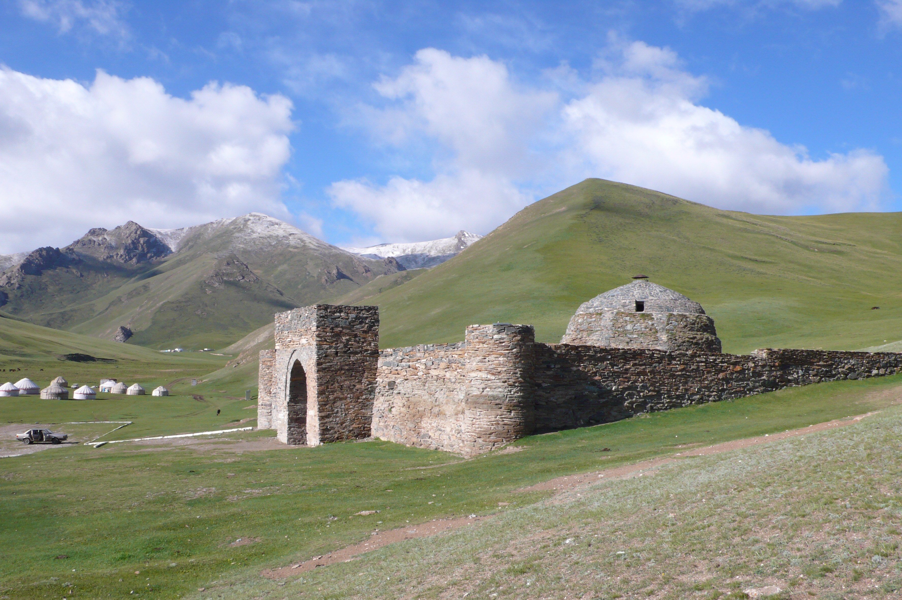

Таш-Рабат — караван-сарай на территории Ат-Башинского района, Нарынская область, Кыргызстан, недалеко от границы с Китаем. Сооружение расположено на берегу извилистой речки Таш-Рабат, притока реки Кара-Коюн, на высоте более 3500 м над уровнем моря.
Таш-Рабат был построен в XV веке на месте более древнего монастыря IX-X веков. Существует две версии его основания: первая — крепость была основана ханом который хотел защитить торговые караваны от разбойников, и при этом внести вклад в развитие страны. Вторая — он был основан местным богачом, но стройка этого замка не закончилась по неизвестными причинами.
Со временем в Центральной Азии окончательно закрепился Ислам, монастырь начал приходить в упадок. Однако близость к Шёлковому пути не дала храму превратиться в пустыню. Он использовался как караван-сарай.
Считается, что Таш-Рабат был ключевым пунктом при переходе через Тянь-Шань, так как не только предоставлял убежище для купцов, но и служил укреплением при набегах грабителей. Через Таш-Рабат торговые караваны направлялись в города Ферганской долины.